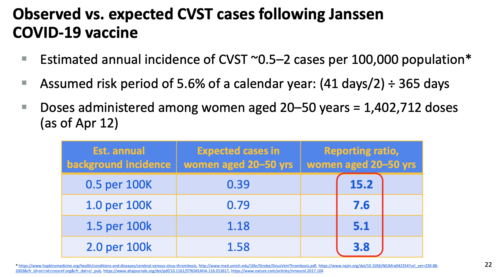
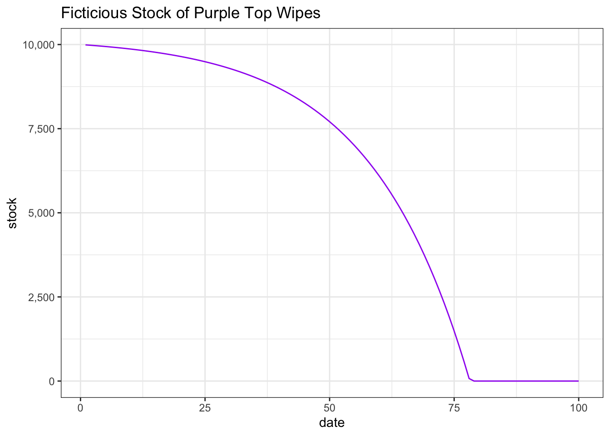

On why we need to trust and respect those with skin in the game rather than pundits who havenothing to lose but followers for a bad or simplistic take on the world.
Nassim Nicholas Taleb is a rather polarizing figure, but one point he makes over and over again is that it is better to trust someone who has “skin in the game.” If you have money on the table or stakes in the outcome, you typically sharpen your pencil and try to maximize your chance of winning (and edge or fold so to speak) when you don’t.
Even to the point that he wrote a book about it, titled, you guessed it Skin in the Game
The argument is very similar to the famous “man in the arena” speech by Teddy Roosevelt, in that the one who fights the battle, who lives with the toils, knows the terrain. Even in the Toyota Manufacturing Way, deference is given to those that live in the Gemba, the place where the work happens, rather than the experts.
The World is Complicated and Messy
So what prompted this post? The below tweet from Nate Silver, the editor in chief of the data journalism/poll and sport focused fivethirtyeight site, made in regard to the United State’s Food and Drug Administration’s decision to recommend pausing distribution of the Johnson & Johnson/ Janssen SARS-CoV-2 vaccine.
Note that they did not revoked the Emergency Use Authorization so technically it was not pulled off the shelf.
Nate’s Tweet
Having an opinion on things is not against the law. Quite frankly, having an opinion and feeling compelled to share it is why Twitter exists in the first place. Later Mr Silver talks about how this is a silly decision due to the gross number of adverse events (n = 6) compared to the total number of doses given (N = 7 Million Doses). Drugs are complicated and there is a monitoring process that detected these so called adverse events which triggered this action from the regulatory bodies.
Where Things Get Complicated
The J&J vaccine really is a wonder drug in the fight against the pandemic. It is a single shot dose and is easy to handle, meaning that you can often access regions that may have poor infrastructure (both infrastructure as in roads/travel/distance/rural areas as well as health care access) and do not have to worry about the loss to follow-up with the two dose regimes. Because of these features, this vaccine was often the go-to for marginalized communities that may suffer from access. Issuing any kind of notice about safety then is a double edged sword where vaccine confidence could be harmed (which is not good in the face of a global pandemic) as well as reducing trust in a key group of people (i.e., the same marginalized people who were sent this vaccine also have a tremendous history with the medicine establishment) who likely need this vaccine the most because of economic conditions that have forced them back to work or living conditions (congregate, multi-general homes) while a high degree of infection still exists. So what do you do? Do you stay quiet and study while potentially more (relatively rare) events occur or do you try and be cautious and transparent and hope that in the long run this move will reinforce the notion that we have safety process and that those processes do work to keep people safe.
The FDA went with the transparency now. This is where Mr Silver has a gripe. The risk of dying from an infection from SARS-CoV-2 for certain demographics is much, much higher than having an adverse event (at face value).
But, the plot thicken when the ACIP group looked into the adverse events, they found that the outcomes occurred in a very specific demographic. Importantly, the details indicate that the observed rate is not 6 out of 7 million, but more like 6 out of 1.7 million. Still rare, but when you want to vaccinate billions of people, the differences stack up.
Generally, balancing risks is incredibly hard. Nothing is absolute and one must way the risk of the vaccine vs the risk of getting in a car to go get a vaccine vs the risk of infection. I get that. However, explaining that to the general public where they just want to know if something is safe is hard (probabilistic vs black and white).

ACIP Slides
So it’s details like this, doing the homework, getting into the details, doing the case analysis, that separates the pundits from the people in the field.
Pundits and Sophists
So here’s where the skin in the game point comes to play. Nate can put whatever he wants on Twitter. If he has a bad take, people may choose not to follow him on twitter or go to his website, sure. People aren’t opening hospitals or setting up refrigerated trucks repurposed as morgues with his projections. States aren’t using his polls to change policy (maybe, but certainly not during the pandemic). All of his forecasting work is really for both sport and political sport (Eitan Hersh has a great book on political engagement vs hobbyism with the polling horse race certainly falling into the latter ). Granted some research has shown that his polls (and those like it) may have a negative influence on voter turnout, but that’s for another day. He can say what he wants and no real decisions are made for which someone can say, “because you said x, we did y, and now you are accountable.”
He’s not stupid enough to do something that heinous that would drive people away from him (but given how the world works, he might attract others to whom whatever it is he says confirms their own notions)
IF the FDA says or does something stupid, those are the people who regular our food and drugs. They have all kinds of prerogatives to never mess up. If someone says something is safe and it turns out to be less safe than marketed, that’s on them. You can see it, you can point to it (I took this shot and it messed me up). Getting sick from a raging virus is harder to point to an agency or a person behind a desk at an agency and say, “because you said this was OK and I believed you and now I got hurt.” SARS-CoV-2 is a known.
Because the FDA had skin in the game, they had to err on the side of transparency and caution. Does it suck that people who could benefit from the vaccine (e.g., the elderly) might not? Absolutely. It is awful and another tragedy and will continue to impact those marginalized communities the most. Would not saying something that would later blow up into a big news story about the FDA covering up an investigation into vaccine induced clotting disorders destroy faith in a regulatory agency be a good reason to err on the side of caution. Yeah.
In the Arena
When I started my first job, I had a ton of confidence. I was good at math and pretty decent at building models. A project came a long where I built the model based on some assumptions that I had been given and it said we didn’t need to make this big capital investment. The company deferred the investment, I was viewed as a hero and all great things. However, as time passes, it turns out that one of the key, critical assumptions that I had been given (from an “expert”) was false. The expert had overstated the performance (more like gave me the target performance rather than actual achieved). If someone in the field had actually gone and seen the machine that was used as the benchmark they would have known that this performance was impossible. The outcome of this event was that even if we reactivated the project, it would be 18 months before we would have what we needed, and by the way we reallocated the capital to support other ambitions. The plant was left with a headache for those two years.
In another tweet Nate talks about how his first job as a management consultant gives him some sage wisdom. Sure management consultants, often ivy league/ private university educated young adults fresh from university, are articulate and good at quick math (and powerpoint), but also suffer from the skin in the game problem. You hire a big three consulting firm, they tell you your problems and leave. They are rarely on the hook for the outcomes or running the implementation where the rubber meets the road. Think McKinsey helping Pharma push opiods or fixing bread prices…. All that to say, this is another example of a group that doesn’t have skin in the game, who doesn’t have to roll up their sleeves and do the work (rather they build the powerpoint and fly home).
I wasn’t blamed for “bad analysis”. However, I (along with my teammates) had to live with my mistake. I never let myself forget each time I had to face an issue that was directly related to the outcomes of my analysis. I took a pundit’s input at face value, rather than doing the homework and talking to those who were on the group with the process. After that I vowed to never trust a pundit or professed expert and would go see for myself or seek the wisdom of those doing the job. It might have taken a little longer and perceived as a conservative shift, but better decisions were made and more thoughtful analysis provided after that day. Interestingly, by developing expertise in sniffing out what was real, you could know when to be more aggressive vs when to operate in the known, precisely because you took the time to develop expertise.
Which Leads to the Pandemic
One of the craziest things in this pandemic, working in health care was the run on purple top wipes.
library(ggplot2)theme_set(theme_bw())dat <-data.frame(date =1:100,burn =10*exp(.05*1:100))dat$stock <-10000-cumsum(dat$burn)dat$stock <-ifelse(dat$stock<0,0,dat$stock)ggplot(dat, aes(x = date, y = stock))+geom_line(colour ="purple")+scale_y_continuous(labels = scales::comma)+labs(title ="Ficticious Stock of Purple Top Wipes" )

Skin in the Game Projections
Early in the pandemic, when we were instituting and modeling our materials use, the question came up about our burn rate on disinfectant wipes used to clean rooms and equipment. Tell me how works into some kind of fancy model of the pandemic. While all these new twitter experts and anyone who could write code was trying to model how many deaths or cases there would be in a month, the most pressing issue within a real hospital was when would we run out of a particular wipe or how many people would show up in my ED and how many nurses, doctors, sanitation support, etc would I need in order to serve them in a given town (not the US or even at the state level). If you’re the person making the projections and you give bad information, someone might not get care who needs it. And there is a face a name behind that persons, not a twitter handle doom-scrolling on a weeknight.
Similarly, you have to take the input from someone who lives day in and day out talking through vaccine hesitancy or rebuilding trust with the health profession. It takes time and you have to listen and see with your eyes open. Spent a few weeks shadowing these people (shadowing nights in a busy ED will certainly open your eyes to what happens in the world in a real way).
Not Credentialism
I’m not writing this to support credentials or credentialism/gatekeeping. We all don’t need to have PhDs and MDs or some kind of advanced degrees to contribute (I don’t have a PhD or MD). Everyone brings something different to the table and can provide insight. Interdisciplinary discussions are vitally important in moving the conservation and analysis forward and results in better decisions being taken. However, if you come to the table, you have to do your homework. That could be in the form of reading books, articles, listening to reputable experts, interviewing boots on the ground, working through the problems, whatever, you have to do the homework. Experience and the experience of others is invaluable. Act like you have skin in the game and that everything you say you will be accountable for. You have to respect the science and approach the conversation with respect. Measures are messy, the world is certainly not simple, science is hard, trust is easily lost, and communication is challenging.
![]()